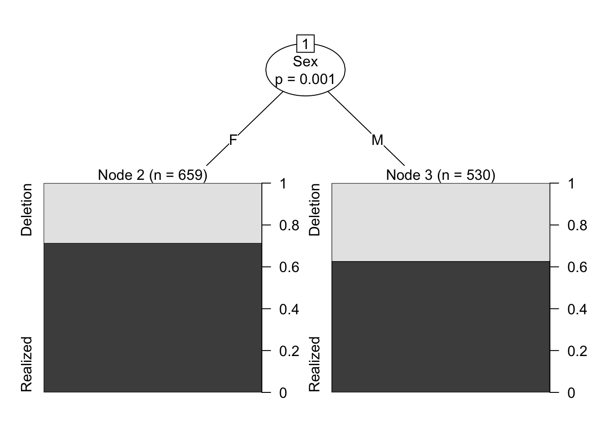
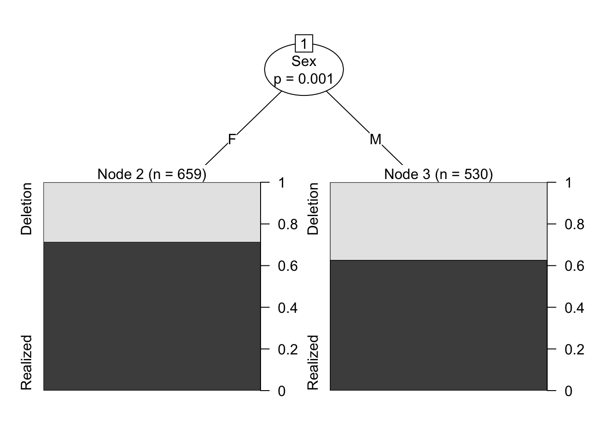
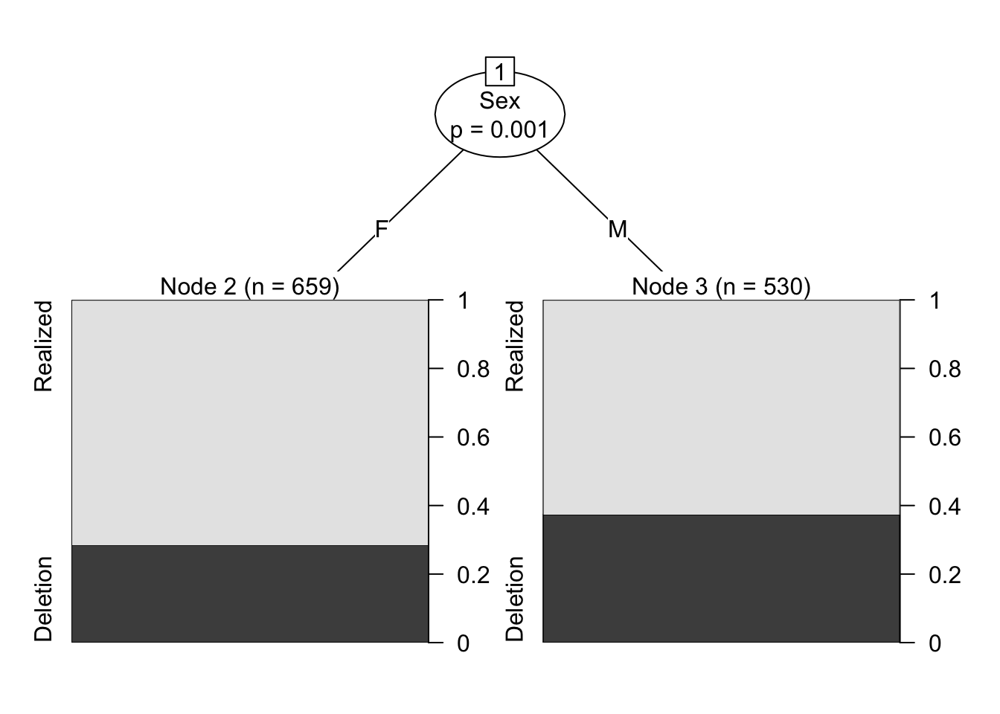
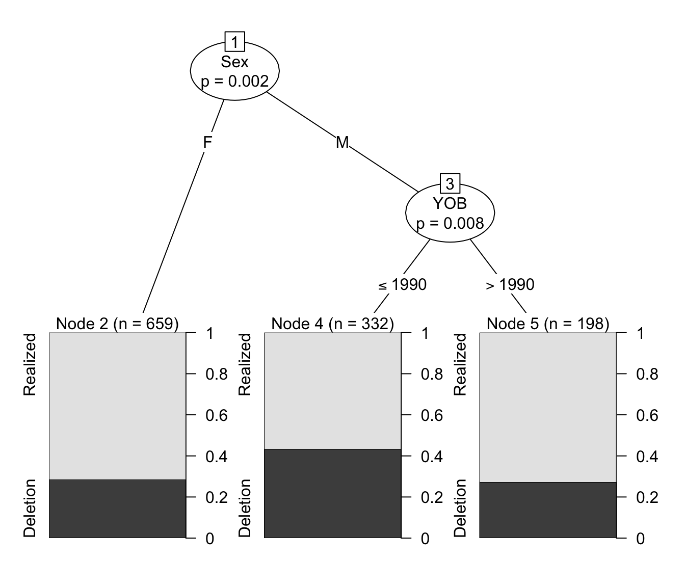

![]()
# Make a Conditional Inference Tree testing Sex
library(partykit)
td.ctree <-ctree(Dep.Var~Sex, data = td)
plot(td.ctree)
A useful data exploration technique is using conditional inference recursive partitioning trees. These analyses, represented as plotted partitioned trees, show us where there are significant differences between levels of factor groups.
Conditional inference trees are created by the package party, though I prefer the newer package partykit, which does the same analysis as party but has more customizable plots.1 The ctree() function is set up like most analysis functions in R. You start by specifying the dependent variable (here Dep.Var) followed by a ~. Everything to the right of the ~ is a potential predictor (e.g., independent variable). Here you only specify Sex as a potential predictor. Finally, you specify that the data is td.
If you don’t have the td data loaded in R, go back to Doing it all again, but tidy and run the code.
# Make a Conditional Inference Tree testing Sex
library(partykit)
td.ctree <-ctree(Dep.Var~Sex, data = td)
plot(td.ctree)
The plot above visualizes the conditional inference tree analysis. There is a significant difference (p=0.001) between F females and M males in the data, with males using a higher percentage of Deletion variants versus Realized variants compared to females. Here the black part of the bars represent Realization, but this might not be how you want to represent this variable in a figure. Sometimes in variationist sociolinguistics variation is expressed in terms of the non-standard variant or the variant that is the most unlike the underlying representation. This is especially true for (t, d) deletion — most of the literature on the variable discusses “rates of deletion” not “rates of realization”. Therefore, for a manuscript, you might decide to make the black bars (and the proportions they show on the right) represent Deletion. You can do this by reordering the levels of Dep.Var and then re-running your ctree() function.
# Reorder levels of Dep.Var
td$Dep.Var <-factor(td$Dep.Var, levels= c("Realized", "Deletion"))
# Make a Conditional Inference Tree testing Sex
td.ctree <-ctree(Dep.Var~Sex, data = td)
plot(td.ctree)
We can add more predictors to this analysis. Each predictor is separated by +.
One specific way variationist sociolinguists have used conditional inference trees over the last few years has been to identify significant divisions or ``shock points’’ in continuous age or year of birth variables. These divisions are the ages before and after which speakers show a significant difference in the use of the dependent variable.
# Make a Conditional Inference Tree testing YOB and Sex
td.ctree <-ctree(Dep.Var~YOB+Sex, data = td)
plot(td.ctree)
This tree shows the conditional inference tree where both Sex and YOB are included as potential predictors. The tree tells us that there is a significant gender effect, and a significant age effect, but only for men. First, it shows that the predictor with the greatest explanatory value (or which has the greatest magnitude of effect, if that’s how you want to think about it) is Sex. There is a significant difference (\(p=0.002\)) between females, who use Deletion about \(29\%\) of the time and males. Among the males there is a significant difference (\(p=0.017\)) between men born in and before 1990 — who use Deletion more, at about \(43\%\) — and men born after 1990 – who use Deletion less, at about \(30\%\). This, of course, doesn’t take any other factors into account.
Another useful way to employ conditional inference trees is when you have an independent variable with many levels. The ctree() function can help you decide how to collapse some of the levels of the variable. Of course, this should only be done as part of a theory-driven reflection on the relevant distinctions in the level. The ctree() should function as statistical validation for your theory-driven choices to merge certain levels of an independent variable.
Let’s examine following phonological context. Below we generate a ctree() with After as the independent variable.
td.ctree <-ctree(Dep.Var~After, data = td)
plot(td.ctree)
We can see that the first division is between Consonant and all other options. Among the other options there is a division between Pause/H and Vowels. This might give us justification to merge Pause/H together in subsequent analyses. But, there also needs to be a theoretically-driven reason to do this. Technically H represents a consonant, so why shouldn’t it be grouped with other consonants? Other analyses of (t, d) deletion group pre-/h/ contexts with other pre-consonant contexts, so why shouldn’t we here? This is why your decisions need to be guided by theory. Is there a good theoretical reason why pre-pausal and pre-/h/ contexts should be merged? Well, in this case, yes there is.
If Deletion vs Realization is effected by following phonological context, why might that be? Firstly, if there is a following consonant, deletion could be due to neutralization with that following consonant. This type of neutralization is generally not possible with /h/. Additionally, deletion may be part of a process whereby a word-final consonant clusters are re-phonologized as the onset to a following vowel-initial word, and certain onsets, like /nt-/ or /ld-/, are not licit and (t, d) deletion results. In this case, pre-/h/ and pre-pausal contexts represent the category of phonological contexts for which neither neutralization or re-phonologization effects are possible. For this reason, combining H and Pause would be theoretically justified, and this decision can be supported by the results of the conditional inference tree analysis.
You’ll remember from previous chapters that we merged H with Consonant in the new column Afer.New. This was motivated by the desire to have our data match other analyses of (t, d) deletion. Finding out that H patterns with Pause leaves us with a methodological choice. We can group H with Pause, which might be the most appropriate for the distribution of Deletion and Realized in our data, but doing so means we violate one of the assumptions of the comparative method (discussed in subsequent chapters). We can group H with other consonants in order to compare our data to past analyses using the comparative method, but whether this produces the most accurate analysis of our own data is questionable. A good rule of thumb in these scenarios is to analyse the data both ways, and be honest about your methodological choices in your manuscript.
The package ggparty provides even further customization via ggplot2 plotting.↩︎
@online{gardner2022,
author = {Gardner, Matt Hunt},
title = {Conditional {Inference} {Trees}},
series = {Linguistics Methods Hub},
volume = {Doing LVC with R},
date = {2022-09-27},
url = {https://lingmethodshub.github.io/content/R/lvc_r/080_lvcr.html},
doi = {10.5281/zenodo.7160718},
langid = {en}
}